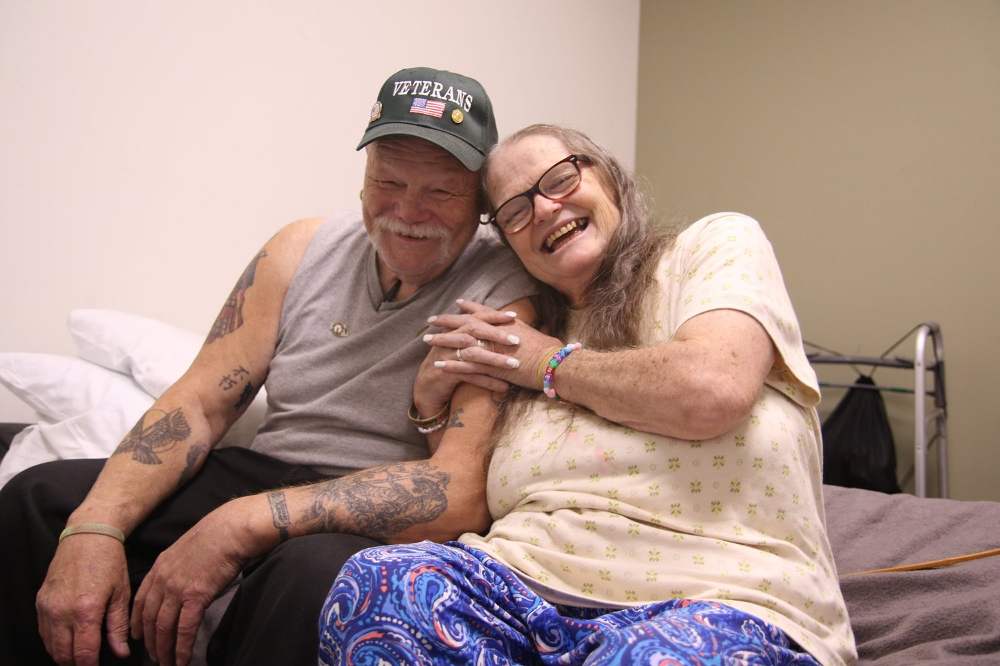

Join Our Giving Circle

Keven, his wife Jayne, and their two adult children moved into the OpenDoors shelter in the summer after losing their Woonsocket apartment due to financial struggles. Keven says he hopes to find a new place to live with the help of Veterans Affairs, but until then, he’s making the most of his stay at the shelter. The property has a small lawn and a grill that Keven used to hold a barbecue for the other residents and staff: “I was greatly appreciative that they let us in, so last weekend I got burgers for a cookout."
OpenDoors is now operating a 75 bed shelter in Woonsocket and our residents need help as they try to get back on their feet and move into stable housing. You can help by providing donations of any of these items in high need: winter clothes, socks, hygiene products like soap, toothpaste, deodorant, shampoo, and feminine hygiene products.
When our residents move into their own apartments, they often need help with everything from beds to pots and pans. Sign up below to both tell us what items you have to donate and also to join our email list so we can send you updates with information about what items our residents need.
Sign up for our Giving Circle and we will send you emails to let you know about what specific items our residents need.